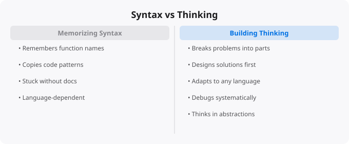

Why Syntax Matters Less Than Thinking

There is a stage that almost every new programmer goes through: spending enormous amounts of time memorizing syntax. How to write a for loop in Python. The exact syntax for a class definition in Java. The correct way to declare variables in JavaScript. This focus on syntax is understandable — syntax errors are the most visible and immediate failures in programming, and learning the specific rules of a language feels like necessary progress.
But this focus misses the more important truth: syntax is the least important part of programming. Syntax is just vocabulary. Thinking is the grammar, structure, and meaning. A person who knows vocabulary without being able to construct sentences is not a speaker. A programmer who knows syntax without being able to think through problems is not really a programmer.
What Programming Actually Is
Programming is the skill of decomposing problems into smaller sub-problems, identifying the logical structure of a solution, and expressing that logic precisely enough that a computer can execute it. The syntax is just the notation used for that final expression step. The hard part — the part that makes programmers valuable — is everything before the typing begins: understanding what the problem is asking, designing a solution approach, considering edge cases, thinking about efficiency, and anticipating how the code will need to change.
Consider two programmers given the same task. Programmer A has excellent syntax recall and can write clean, idiomatic Python from memory. But they struggle to think about how to structure a complex problem, tend to write linear code that works for the happy path but fails on edge cases, and cannot decompose ambiguous requirements into concrete implementations. Programmer B looks up syntax regularly, makes small typos, and uses the autocomplete heavily. But they naturally think about edge cases, can reason clearly about data flow through a system, write modular code that is easy to test and change, and can translate vague requirements into concrete implementations. Programmer B is more valuable in almost every professional context, despite having weaker syntax recall.
Thinking Skills That Matter More Than Syntax
Problem decomposition is the foundational programming thinking skill. Given a complex task, how do you break it into smaller, manageable sub-tasks? How do you identify the core logic versus the peripheral concerns? How do you sequence the sub-tasks? This skill determines whether you can approach difficult problems at all. Without it, even well-written syntax produces spaghetti code that no one can maintain.
Abstraction is the ability to identify patterns and generalize them. Rather than writing similar code three times with small variations, a programmer with strong abstraction skills sees the pattern and writes a single general solution that handles all three cases. Good abstraction produces code that is concise, reusable, and easier to understand. Poor abstraction produces code that is verbose, repetitive, and fragile.
Debugging thinking is often undervalued but is one of the most important practical skills. When code does not work as expected, how do you systematically identify the cause? How do you form hypotheses about what might be wrong, test them efficiently, and narrow down the problem space? Effective debugging requires clear causal thinking and the discipline to test assumptions rather than jumping to solutions.
Algorithmic thinking — understanding how different approaches to a problem compare in terms of efficiency, recognizing common patterns like recursion, dynamic programming, or graph traversal, and knowing when the naive approach is good enough versus when efficiency matters — separates programmers who can solve straightforward problems from those who can solve hard ones.
The AI Era Makes This Even More True
AI coding assistants have made the syntax gap less significant than ever before. GitHub Copilot, Claude, ChatGPT, and similar tools can generate syntactically correct code in any popular language from natural language descriptions. The value of memorizing syntax has declined further. What AI cannot do is decide what to build, design the architecture of a system, evaluate whether a generated solution is correct and efficient, decompose an ambiguous real-world requirement into precise technical specifications, or understand the context-specific constraints that make one solution better than another.
These capabilities — the thinking skills — are what professional programming actually requires. And they are not learned by memorizing syntax. They are learned by solving many problems, struggling with difficult challenges, reading code that more experienced programmers have written, reflecting on why certain approaches work better than others, and building systems that must actually function reliably in the real world.
How to Develop Programming Thinking
Practice solving problems that require thinking, not just coding. Platforms like LeetCode, HackerRank, and Codeforces offer problems that require algorithmic thinking. Do not just solve problems — think about why your solution works, what the alternative approaches are, and what the trade-offs between them are. Read good code written by experienced programmers. Open source projects on GitHub are a vast library of programming thinking made visible. Read code, try to understand the design decisions, and notice the patterns that appear repeatedly. Build things that actually need to work. Toy programs where failure has no consequences do not build the discipline of anticipating failures and handling edge cases. Real projects — even small ones — force you to think more carefully. Write about what you build and learn. Explaining your thinking forces clarity and reveals gaps in your understanding.
The Practical Balance
None of this means syntax does not matter at all. You do need to know enough syntax to read and write code in your primary language fluently. But fluency comes from practice, not from deliberate memorization. Focus your learning energy on thinking skills, and let the syntax follow naturally from regular practice. That is the path to becoming a programmer who can actually solve hard problems — which is what the industry needs and rewards.
Key takeaways
- Syntax is the easy part. Any decent programmer can learn a new language's syntax in a weekend. Thinking — what to build, how to model it, what trade-offs to make — takes years.
- AI tools have made syntax even cheaper. The differentiator isn't "I know Python"; it's "I know when to use Python, what to build, and how to ship it".
- Build muscle for problem decomposition: take a big problem, split it into smaller ones, solve those, compose the solutions. This skill transfers across every language.
- Read code from systems you admire. Most people read tutorials; few read production codebases. The latter teaches you the most.
Practice and Building: The Path to Real Skill
Reading about technology and doing technology are fundamentally different activities. You can understand a concept intellectually without being able to apply it under real conditions. The gap between understanding and skill closes through deliberate practice — working on problems that are slightly beyond your current comfort level, where you have to stretch and figure things out. Comfortable practice does not build skill the same way that challenging practice does. Seek out projects and problems that require you to use what you have learned in new contexts, where you cannot just repeat what you have seen before but must think through a new application of familiar principles.
Document your learning publicly. Writing a blog post explaining what you learned, pushing a project to GitHub, or sharing a solution in a community forum creates accountability, consolidates understanding, and builds a visible portfolio. Many opportunities — jobs, collaborations, mentorships — come through the content people create and share. Start writing and building in public early, even when you feel like you do not know enough. The imposter syndrome is universal; do not let it delay the habit of sharing.
What Problem Solving Actually Looks Like in Software Development
Experienced developers rarely think about syntax. They think about the problem. When asked to build a feature, their internal monologue is not "what method do I call to sort a list in Python?" -- they just know that, or they look it up in 10 seconds. Their attention is on: what is the data shape? What are the edge cases? What happens when the database is slow? What does this look like at 10x scale? How do I test this? How do I make this understandable to whoever maintains it next?
Step 1: Understand the problem fully
What is the input? What is the expected output?
What are the edge cases? What should happen on failure?
What are the performance requirements?
Is this a new problem or a variation of a known pattern?
Step 2: Design before coding
Sketch the solution (paper or pseudocode)
Identify the main algorithm or data structure
Consider trade-offs: speed vs memory, simplicity vs flexibility
Ask: is there an existing library that solves this?
Step 3: Implement incrementally
Write the simplest version that could possibly work
Test it with simple inputs
Add complexity and edge cases one at a time
Refactor for clarity once it works
Step 4: Verify and review
Test with edge cases and invalid inputs
Read the code as if you have never seen it
Would another developer understand this without explanation?
What breaks if requirements change slightly?Building Your Problem-Solving Muscle
Problem-solving ability develops through deliberate practice. The most effective practices are: solve coding problems on LeetCode or HackerRank (focus on medium difficulty, not just easy), review your solutions after solving them -- how would an expert approach this differently, read other people's solutions and understand why they made different choices, practice explaining your reasoning out loud (important for interviews and real team communication), and work through the system design problems found in "Designing Data-Intensive Applications" or similar resources.
More Questions Answered
How do I improve my problem-solving skills for technical interviews?
Practice the PEDAC method: Problem, Examples, Data Structure, Algorithm, Code. Solve at least 2-3 LeetCode problems daily for 3 months. Focus on patterns (sliding window, two pointers, BFS/DFS, dynamic programming) rather than memorising solutions. Mock interviews with peers or on platforms like Pramp.com practice the verbal explanation skills that interviews require.
Can I be a good developer without strong algorithms knowledge?
Most day-to-day web and application development requires basic algorithms competence (understanding time complexity, knowing when to use which data structure) but not deep competitive programming ability. Strong algorithms knowledge is critical for: performance-critical systems, embedded systems, game development, and passing technical interviews at top companies.
What books develop the best engineering thinking?
"The Pragmatic Programmer" by Hunt and Thomas -- practical engineering wisdom. "Clean Code" by Robert Martin -- writing understandable code. "Designing Data-Intensive Applications" by Kleppmann -- distributed systems thinking. "A Philosophy of Software Design" by Ousterhout -- reducing complexity. These books shape how you think about software, not just how you write it.
Frequently Asked Questions
Is this topic relevant for Indian tech professionals?
Yes. India is one of the fastest-growing tech markets globally. These skills are in high demand across startups, MNCs, and product companies in Bangalore, Hyderabad, Pune, and Mumbai.
How do I stay updated on this topic?
Follow official documentation, tech blogs from practitioners, GitHub repositories, and communities like Dev.to, Hashnode, and Reddit. Avoid news that creates urgency without substance.
What resources does SRJahir Tech recommend?
Official documentation first. Then practical tutorials. Then build real projects. SRJahir Tech articles are written from real production experience — bookmark the series that matches your learning goal.
How long does it take to see results after learning?
Consistent daily practice for 3-6 months produces real, usable skills. The key is building projects, not just reading. Every article on SRJahir Tech includes practical examples you can implement today.
Is SRJahir Tech content free?
Yes. All articles on SRJahir Tech are completely free. No paywalls, no subscriptions. Quality technical education should be accessible to everyone, especially aspiring engineers in India.